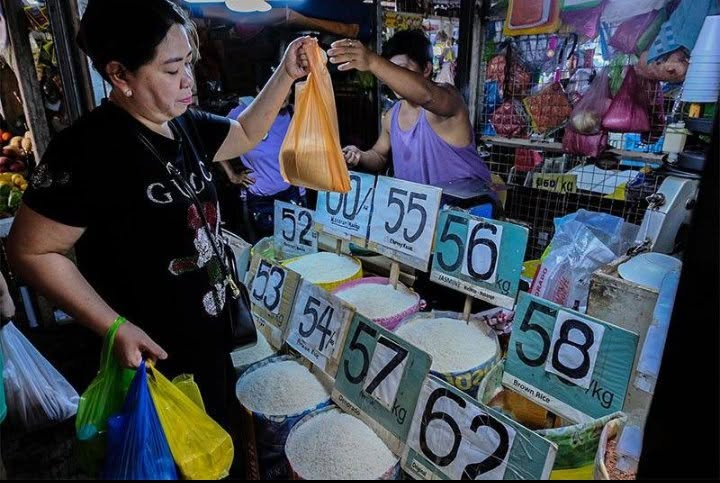

BALITA SA BANSA
Mga napapanahong balita at suliranin sa ating bansa.
BALDE, SOLUSYON SA MATINDING EL NIÑO
Isang simpleng paraan ang pag-iipon ng tubig sa balde upang makatulong sa mga mamamayan sa panahon ng tagtuyot.
BASAHINPAGBABA NG HALAGA NG PISO KONTRA SA USD
Patuloy na bumababa ang halaga ng piso laban sa dolyar at nagdudulot ito ng epekto sa ekonomiya ng bansa.
BASAHIN
PATULOY NA PAGTAAS NG PRESYO NG MGA BILIHIN, PABIGAT SA MGA PAMILYANG PILIPINO
Patuloy na nararamdaman ng maraming pamilyang Pilipino ang pagtaas ng presyo ng mga pangunahing bilihin.
BASAHIN